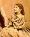
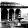
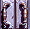

| William L. Clements Library
The University of Michigan Schoff Civil War Collection Soldiers' Letters 4:76 |
Dickson, William G. Rank: Major, Lieut. Colonel Regiment: 1st Ohio Heavy Artillery Regiment (1862-1865) Service: 1863 July 3-1865 July 25
In May, 1861, William G. Dickson left Savannah, Ga., where he had apparently been a merchant, and made his way north to the home of his grandfather, E. Levassor, in Cincinnati. A staunch unionist, Dickson received a commission as major of the 1st Ohio Heavy Artillery Regiment in July, 1863. For several months, Dickson's regiment was occupied in building fortifications and combatting guerrilla activity in Kentucky. Although it is unclear, it appears that at some point, Dickson may have joined the staff of Gen. Davis Tillson, Chief of Artillery of the Department of Ohio, and head of defences at Cincinnati and Knoxville.
In April, 1864, when General William F. Barry, was named Chief of Artillery for the Military Department of the Mississippi under the command of William T. Sherman, Dickson was asked to join Barry's staff. Placed on detached leave from his regiment, Dickson became Assistant Inspector General of Artillery for Barry, and traveled to headquarters in Nashville. With the success of the Sherman's efforts in Georgia, Dickson traveled to Atlanta early in October to begin preparations for the Georgia campaign. The city still in a shambles, Dickson was witness not only to the devastation of war, but to the struggle between the vanquished, but defiant John Bell Hood, and the victorious, but no less defiant Sherman.
In October, Dickson accompanied the expedition to relieve John Corse at Allatoona, and then hove into the March to the Sea. Upon his triumphant entry into Savannah, his former home, he noted how much had changed, how the stars and stripes now flew and the merchants he had last seen four years before seemed to have aged so much. "It was a grand time for me," he wrote, "and I enjoyed it much... A set of more thoroughly whipped Rebels the world never saw" (1864 December 29). Surprisingly, the citizens seemed positively hospitable to their conquerors, even calling upon the governor to call a state convention to bring Georgia back into the Union. But not all was well. Dickson soon discovered that his brother had been unable to escape from Savannah in 1861, and had been imprisoned for eight months as a union sympathizer before being forced to serve in the Confederate Quartermaster's Corps. In January, 1865, now in the Carolinas, Dickson finally met up with his brother near Columbia, S.C., in a remarkably unremarkable moment. Called into his tent to meet someone, Dickson encountered his brother, who had managed to slip away from the Quartermaster Department and lay low until union forces had overtaken him. The fate of the Dicksons after the war is unknown.
The letters that survive from William Dickson's years as a Union soldier are few in number, but underscore several important aspects of the Civil War. All twelve letters are addressed to his grandfather, and each letter appears to have been written with great care, with a keen eye for detail and good narrative. Dickson's descriptions of artillery and fortifications are those of a professional, and his observations on the people of the south -- their appearance, ideas, and emotions -- show both his sensitivity and his dull awareness of the impact of war.
As a one-time resident of Savannah, his return to that city in 1864 as a conqueror is one of the high points in the collection, and his comparison of "before" and "after" pictures of the war-torn city are unique in that few persons could have written such an account. His commentary on William T. Sherman's war policies provides a glimpse from a man who apparently knew the General personally. In a very different way, his description of a "frolic" at Mammoth Cave, accompanied by bloomer-clad women and a heavy guard against guerrillas, is outstanding, providing an entertaining, odd view of soldiers at play.
Alphabetic index to the Schoff Civil War Collections
|  Homepage |
 Manuscripts |
Collections | Staff |
Hours and policies |
|---|